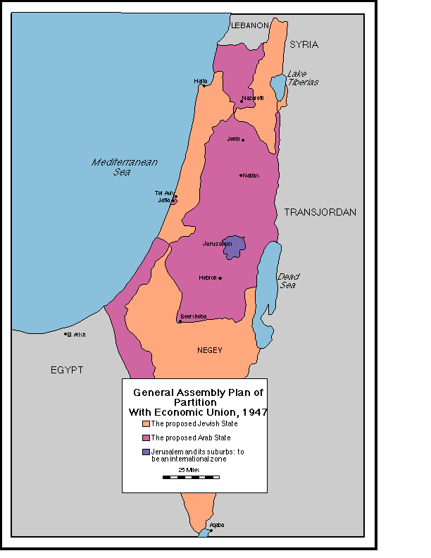

“Никогда больше” - и больше, и больше
«Окончательное решение» не было изобретением немцев, это был совместный проект христианского мира.
Христианская Россия подумывала о собственном варианте «окончательного решения» в девятнадцатом веке. Русское правительство тепло встретило сионистских лидеров именно потому, что они предложили освободить Россию от евреев. Правительство провоцировало массовые погромы. Правительственные войска независимой Украины уничтожили такое количество евреев, которое превзошла лишь Катастрофа.
Сталин был большим антисемитом, но разрешил евреям занять самые видные – и одновременно ненавидимые – позиции в коммунистической иерархии. Сталин допустил стратегическую катастрофу, когда поделил Польшу с Германией: отсутствие этого буферного государства позволило немцам в июне 1941 года уничтожить российскую армию за считанные дни. Единственная причина разделения Польши состоит в том, чтобы передать еврейские города немцам. Германия и Россия разделили Польшу именно таким образом, что все главные еврейские населенные пункты отошли немцам. Русские поддерживали немцев вплоть до нападения последних на Советский Союз; немцы получали российское железо, зерно и многие другие товары.
Советское правительство знало, что немцы уничтожают евреев в оккупированных территориях с самого первого дня, начиная от сожжения в Белостоке, но не предупредило их, хотя еще было достаточно времени, чтобы спастись, пусть даже пешком. Население Украины, Латвии, Эстонии, Литвы, России и Белоруссии массово помогало немцам отлавливать и убивать евреев; вдумайтесь, откуда немцы узнавали, кто из жителей города – еврей?
Большинство европейских христианских народов проявило не меньшее рвение, помогая немцам уничтожать евреев. Советская авиация массированно бомбила Восточную Европу – но не лагеря смерти. Примо Леви засвидетельствовал, что «трудовые» лагеря вокруг Освенцима подвергались ежедневным бомбардировкам, но ни одна бомба не упала на лагерь смерти.
Сразу же после Второй мировой войны, когда многие евреи, казалось бы, избежали страшной участи, русские предложили новое решение: еврейское государство. Поддержку Сталиным Израиля можно объяснить только одной причиной – его желанием уничтожить евреев. Сталин не собирался делать Израиль плацдармом социализма на Ближнем Востоке: несмотря на тот факт, что многие израильские евреи были социалистами, еврейские лидеры глубоко презирали антисемитскую Россию, и за исключением самых радикальных коммунистов очень немногие евреи поддерживали идею развития отношений со сталинской Россией.
Гораздо большую ставку Сталин сделал на постколониальные мусульманские страны: Египет, Сирию и Ирак. Со стороны России было бы абсурдом поддерживать Израиль против арабов, у которых и земли, и огромная численность населения.
Номенклатура оружия, которое Россия поставляла Израилю в Войну за независимость, показывает, что Сталин намеревался сделать Израиль ловушкой для евреев: Россия продала Израилю (через Чехословакию) устаревшее легкое вооружение, примитивную артиллерию и несколько бесполезных трофейных самолетов (при обороне Тель-Авива в марте 1948 года 3 из 4 наших самолетов «Мессершмит-109» были сбиты в первой же атаке). Этого было достаточно, чтобы продолжить и обострить войну с арабами, но вряд ли – чтобы ее выиграть.
Если бы Советский Союз хотел победы евреев, он бы поставил Израилю танки, артиллерию и авиацию (Сталин препятствовал отправке Югославией даже 60 самолетов «Спитфайр») или просто дал понять арабским странам, что за еврейским государством стоит непобедимый СССР. Напротив, Чехословакия поставляла современное вооружение арабам (8000 автоматических винтовок, 200 пулеметов и другое вооружение всего в одной поставке в Сирию – инцидент «Лино»).
Многие советские евреи (особенно Драгунский, позже ставший официальным лидером советских антисемитов) хотели поехать сражаться за Израиль, но им не позволили. Советская поддержка Израиля была ничтожной в сравнении с массированной помощью испанским коммунистам, сражавшимся с Франко, а также Анголе и другим странам.
Когда Израиль победил, Россия начала крупную антисемитскую кампанию, которая в 1953 году завершилась подготовкой массовой депортации в Сибирь, на полюс холода – именно в то место, куда немцы собирались отправить евреев умирать, до того как появились лагеря смерти. Сталин сдох за считанные дни до начала депортации.
Великобритания спровоцировала самые крупные погромы: в Иерусалиме, Хевроне и Тверии британцы показательно вывели свои полицейские силы из городов. Евреев массово преследовали, убивали и высылали в мусульманских странах, контролируемых Францией и Великобританией: Ираке, Сирии, Тунисе, Египте и Марокко. Евреям, спасавшимся от Катастрофы, британцы отказали в убежище в Палестине. Раньше британцы предложили евреям поселиться в Уганде; аналогичным образом немцы подумывали о выселении евреев в Мозамбик и русские – в Сибирь. (Уганда, где никогда не жили евреи, стала крайне антисемитской; вспомним операцию «Энтебе».) Позднее, Великобритания обеспечила ООП убежище в своем протекторате Кувейте.
Американский еврейский истеблишмент, эта кучка ассимилированных еврейских придворных, живущих за счет продажи душ своих соотечественников, делала вид, будто сомневается в масштабах немецкой резни евреев. Они лгали. Любой поляк, живущий неподалеку от Майданека и Освенцима, знал, что в них происходит: он видел, как целые железнодорожные составы заходят в лагеря с евреями, а выходят пустыми. Послевоенные интервью с поляками показали, что они ясно понимали, что идет резня. Без сомнения, вместе с другими отчетами эта информация поступала и к еврейским «лидерам». По меньшей мере с начала 1944 года они знали об уничтожении венгерского еврейства: немцы предельно ясно описали свои планы сионистам, которые отказались всего-то предоставить немцам грузовики, кофе и деньги в обмен на всех венгерских евреев.
Администрация США имела мощнейшую разведку и знала об уничтожении евреев, хотя бы по расшифровкам немецких переговоров, в которых упоминались точные цифры убитых евреев. При этом Америка отказалась всего лишь разбомбить лагеря смерти. Перед Второй мировой войной, когда антисемитизм немецких властей был очевиден, а британские и американские газеты рассказывали об ужасных страданиях евреев, Америка отказала во въезде евреям, спасавшимся от Катастрофы, и превратила в фарс Эвианскую конференцию, которая должна была найти убежище для евреев.
Американцы, британцы и русские вели радиовещание на оккупированную немцами Европу, но ни разу они не упомянули ведущееся уничтожение евреев. Именно это молчание позволило немцам отправлять железнодорожные составы с ничего не подозревающими евреями в Освенцим вплоть до осени 1944 года. Если бы они знали, что их ожидает, то могли бы спастись, восстать или хотя бы окончить жизнь самоубийством в своих домах. Что мешало союзникам – всем союзникам – хоть раз упомянуть об уничтожении евреев? Бомбить лагеря смерти (но не множество соседних объектов) якобы было сложно, но что, если не заговор молчания, помешало им просто предупредить 400.000 венгерских евреев?
План ООН по разделу Палестины 1947 года не был подарком для евреев – он должен был лишь завершить «окончательное решение». Еврейское государство состояло из трех анклавов, разделенных арабской территорией. Сами эти «еврейские» анклавы включали в себя 40% арабского населения. Таким образом христианские члены Совета безопасности ООН обеспечили арабам возможность напасть на Израиль как снаружи, так и изнутри. Евреям предстояло сгинуть.

Со времен Катастрофы ничего не изменилось. В 1967 году, когда на границе стояли арабские армии, Израильские силы обороны заранее копали тысячи могил, а рядовые израильтяне ожидали новую Катастрофу, что делал мир? Ничего. Насер и сирийцы ясно заявляли о своем намерении уничтожить всех евреев, а не просто демонтировать сионистское государство. Но когда Израиль нанес превентивные удары и выжил, мир тут же вознегодовал.
В 1973 году, когда египетская армия намеревалась войти в Тель-Авив в течение нескольких дней, лидеры американского еврейства не стали организовывать массовые демонстрации, требуя от американского правительства военного вмешательства: в конце концов, Америка воевала на стороне корейцев, вьетнамцев и Кувейта. Лидеры европейского еврейства тоже не приковывали себя наручниками к президентским дворцам, требуя открыть воздушное пространство для израильских грузовых самолетов: Европа закрыла небо для военных поставок, в котором жизненно нуждалось еврейское государство. Когда мир, включая ассимилированные еврейские организации, бьет себя в грудь и заявляет: «Никогда больше!» – пусть он помнит, что это «никогда» уже наступало.
Будет неверным заключить, что мир не извлек урок из Катастрофы. Он извлек невероятно важный урок: убийство миллионов евреев вполне приемлемо. Повесили кучку немцев, но большинство бывших нацистов закончили свои дни в комфорте, в том числе в государственных офисах. Уже спустя несколько лет после Катастрофы Германия открыла в Израиле посольство и была встречена мировым сообществом с распростертыми объятьями. Сегодня говорить с немцем о Катастрофе неприлично, это может оскорбить его чувствительную натуру. Так что народы лишь убедились, что можно спокойно убивать евреев, много евреев.
В 1947 году США проголосовали в ООН за создание еврейского государства. Когда разгорелась борьба между евреями и арабами, американцы отозвали свой голос в пользу Израиля, оставив еврейское государство один на один с арабскими армиями. Америка запретила своим евреям воевать за Израиль и наложила эмбарго на поставки оружия в Палестину. Эта мера никак не сказалась на арабах, которые получали оружие через другие порты, особенно в Египте, а также через Ирак и Сирию. В результате эмбарго вооружений оказалось нацеленным на Израиль. США проголосовали за резолюцию Совбеза, осудившую советские поставки оружия Израилю.
США вернулись к политике уничтожения Израиля в 1956 году. После того как Израиль восемь лет терпел партизанские атаки и наконец очистил Синай от египетских боевиков, США вмешались, остановили Израиль и пригрозили интервенцией на стороне Египта. Президент Эйзенхауэр пообещал Израилю немедленное американское вмешательство в случае блокады Египтом Тиранского пролива – но США не предприняли абсолютно ничего, когда Египет именно так и поступил в 1967. Зато перед Шестидневной войной Израиль оказался без буферной зоны Синая.
В 1967 году США не только не исполнили свои гарантии по обеспечению судоходства в Тиранском заливе, но и подготовили оперативные планы высадки морской пехоты в Синае на стороне Египта. ООН - марионетка США - вывела свои миротворческие войска из Синая по первому же требованию Насера.
В 1973 году США вмешались только для противодействия советскому влиянию на Ближнем Востоке, которое росло с победами Египта и в результате размещения советских ядерных ракет для его защиты. Американская помощь Израилю поступила слишком поздно, и Израиль все равно не успел ее использовать. Европейские христианские страны – члены НАТО отказали американским самолетам в праве пролета над своей территорией, что помешало доставить военные грузы в Израиль.
США оказывают массированную помощь ООП. Америка продает современное оружие Египту и Саудовской Аравии, имитирует ядерное разоружение Северной Кореи и использует Израиль как пешку для подкупа арабов самоубийственным мирным процессом.
Считается, что из всех американских президентов Буш лучше всех расположен к Израилю. Рузвельт тоже очень любил евреев – и ничего не сделал, чтобы остановить Катастрофу. Трумэн был очень расположен к евреям, но при этом чуть не убил новорожденный Израиль через эмбарго поставок оружия. Через несколько десятилетий евреи были весьма удивлены, когда в дневнике Трумэна нашли антисемитские высказывания.
Нынешний мирный процесс – это
стандартная по историческим меркам христианская политика против евреев.
Еврейское государство шириной в